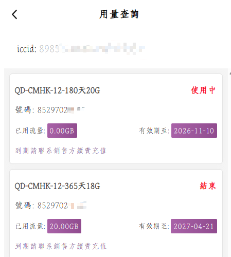

1. 中国内地能不能顺利用
这是最前面的判断点。页面写了覆盖中国，不等于你买到后一定能少折腾地用起来，关键还要看启用方式和激活地点。
中国 eSIM / 中国内地可用 eSIM
2026 年真正值得比较的，不只是 1GB 卖多少钱，而是这张 eSIM 在中国内地能不能顺利用、是不是香港线路、能不能开热点给电脑、后续还能不能接短信和续费保号。 如果你要的是一条更轻的国际移动数据准备路径，这页会把最核心的判断点一次讲清。
判断框架
这是最前面的判断点。页面写了覆盖中国，不等于你买到后一定能少折腾地用起来，关键还要看启用方式和激活地点。
2026 年公开转引资料里，围绕部分含中国内地流量产品的讨论，已经明显把“72 小时窗口”“境外插卡”“首次启用地点”变成购买前重点。
很多用户搜这个词，真正想问的是它是不是更适合国际移动数据场景，而不是只看“香港”两个字。
中国 eSIM 热点共享不是附加分，是工作流需求。能给电脑和平板分发网络，才更接近真实使用价值。
如果你在意香港号码 eSIM、接短信和账号验证，那就不能只把它当一次性流量包。
比套餐总价更关键的是每 GB 成本、激活门槛、热点共享、自动交付和续费保号组合起来的长期使用成本。
市场变化
过境免签优化后，越来越多用户会把“中国能不能直接用”作为第一判断，而不是先看供应商品牌。
中国移动香港相关页面长期围绕来华访客和短停场景组织信息，这说明“访客产品”和“长期备用链路”不能混着看。
本地整理资料显示，市场对部分方案的关注点已经从“值不值”变成“到底要不要境外预激活、会不会多一步折腾”。
说明：这部分里，官方公开信息与本地整理观察会分开看。涉及 2026 年 6 月激活门槛变化的内容，属于基于公开转引和本地资料的市场观察，不等于所有供应商统一结论。
价格与卖点
它不是单纯在卖一个低价流量包，而是把中国内地可用、香港线路、热点共享、免国内实名流程、自动交付和号码短信场景组合在一起。
截图与证明



使用场景
如果你经常要给电脑开热点、在不同网络环境里切换，或者不想太依赖临时公共 Wi-Fi，一张准备好的中国 eSIM 会比临时找网络轻很多。
你要的是落地后少折腾，而不是到了现场再看说明书。自动交付、少一步预激活、少一步物流等待，就是很实在的价值。
香港号码 eSIM、接短信、续费保号，适合长期账号验证、港区应用和备用通信场景。
相较依赖本地 Wi-Fi 再额外开工具，一条独立的移动数据链路通常更适合做备用国际网络准备。
怎么选怎么开
你要的是低价流量、香港线路、热点共享、号码短信，还是长期续费。主需求先确定，筛选就会快很多。
有的产品价格还行，但前置门槛太多。优先确认是否需要境外预激活、是否有时间窗口、是否支持中国内地场景。
不要等到出发或临时使用时才第一次配置。到手后先测联网、热点、短信、常用应用和设备兼容。
如果你要长期备用，续费逻辑、后台状态查询和号码保留能力往往比第一次买时便宜几块更重要。
FAQ
很多方案可以覆盖中国内地场景，但购买前必须确认是否支持中国内地直接启用、是否要求境外预激活、是否支持热点共享，以及套餐实际说明。
部分香港 eSIM 与香港线路漫游方案可以覆盖中国内地场景，但不同产品在访客定位、激活门槛、号码能力和启用方式上差异很大，不能混着看。
很多用户就是为了这个场景来买。热点共享能力非常重要，但仍要以套餐页说明为准。
因为真正的长期成本不仅包含流量价格，还包含激活门槛、是否自动发货、是否支持热点、是否能续费保号以及是否适合你的设备和场景。
esimka.top
那么它更适合放进这个判断框架里看：低至 3.5 CNY/G、中国内地可用、香港线路场景、热点共享、号码短信、自动交付、续费保号。 对很多用户来说，买的不是一张卡，而是一条备用国际移动数据方案。